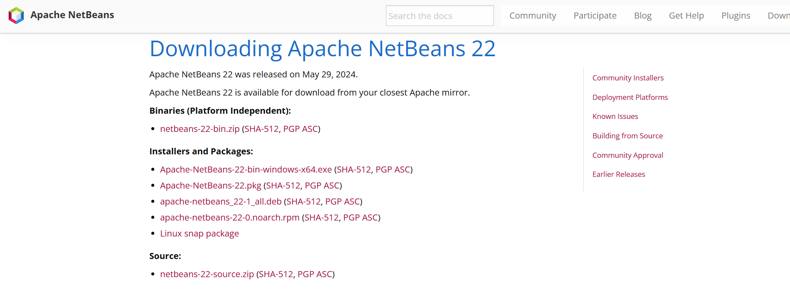
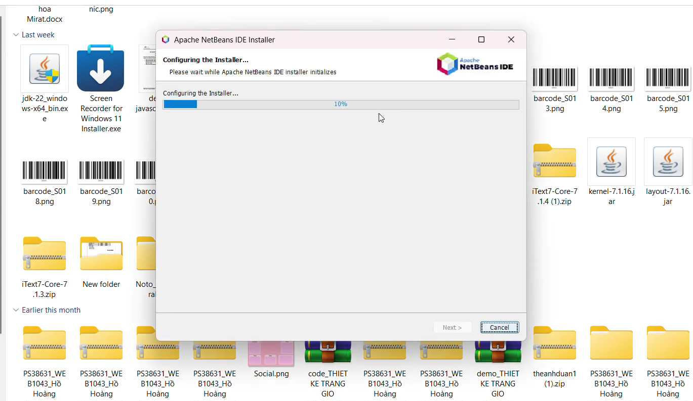
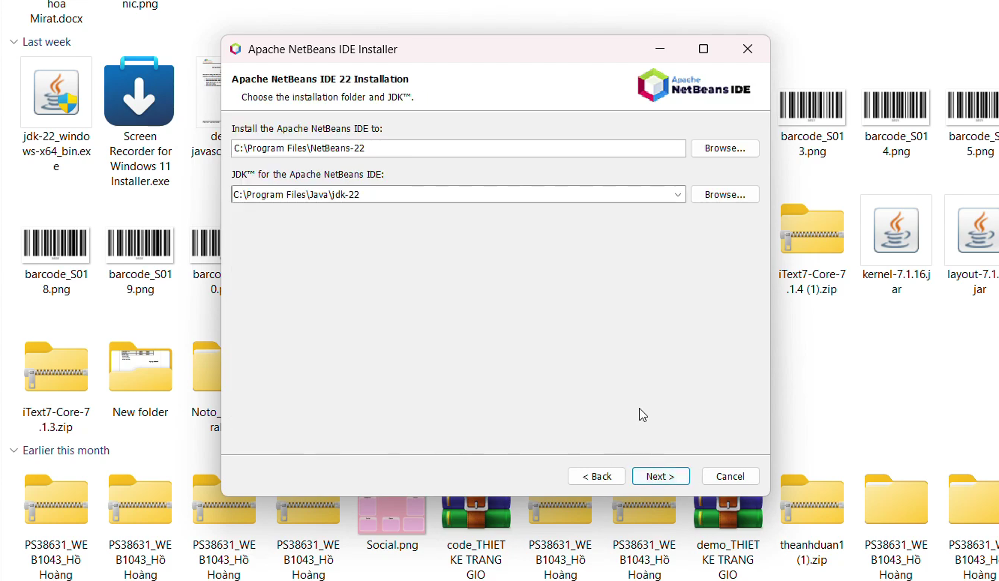
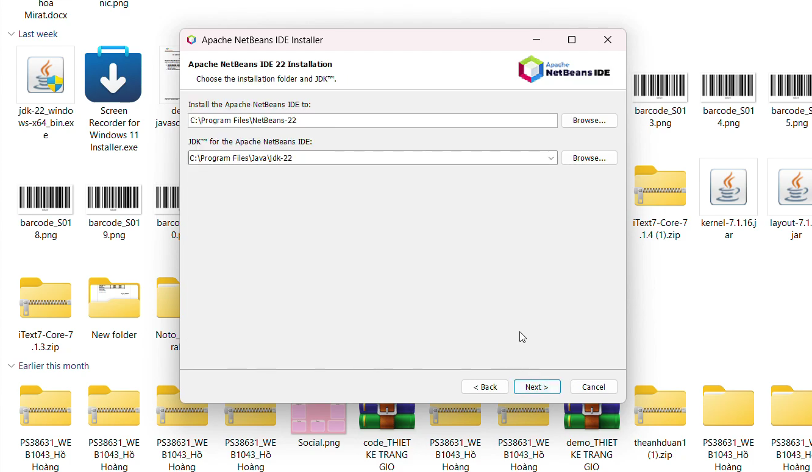

Hướng dẫn cài đặt Java & NetBeans
Mục tiêu bài học
- Hiểu cách tải và cài đặt JDK (Java Development Kit)
- Thiết lập biến môi trường (PATH, JAVA_HOME)
- Tải và cài đặt IDE NetBeans
- Khởi tạo dự án Java đầu tiên trên NetBeans
1. Tải và cài đặt JDK (Java Development Kit)
- Truy cập trang chính thức Oracle hoặc OpenJDK để tải bản JDK phù hợp hệ điều hành của bạn.
- Sau khi tải xong, chạy file cài đặt và làm theo hướng dẫn.
- Trong quá trình cài, ghi nhớ thư mục cài JDK (ví dụ: C:\Program Files\Java\jdk-xx trên Windows).
- Thiết lập biến môi trường (Windows): JAVA_HOME trỏ tới thư mục JDK, và thêm %JAVA_HOME%\bin vào PATH.
2. Tải và cài đặt NetBeans IDE
- Truy cập trang tải NetBeans: Apache NetBeans Downloads :contentReference[oaicite:1]{index=1} - Chọn bản phù hợp hệ điều hành (Windows, macOS, Linux). - Chạy file installer, chấp nhận điều khoản, chọn các module cần thiết.
3. Minh họa các bước cài đặt NetBeans

← Đây là màn hình khởi đầu của trình cài NetBeans (ví dụ chọn các module)
 

← Chọn thư mục cài đặt và các tuỳ chọn cấu hình

← Sau khi cài xong, bạn sẽ thấy giao diện hoàn tất (Finish)
4. Tạo và chạy dự án Java đầu tiên bằng NetBeans
- Mở NetBeans, chọn **File → New Project…** :contentReference[oaicite:2]{index=2}
- Chọn loại dự án “Java Application”
- Nhập tên dự án, vị trí lưu, chọn package và class main
- NetBeans sẽ tự tạo file `.java` có phương thức main
- Viết đoạn code “Hello World” và chạy dự án bằng nút Run hoặc chuột phải → Run
package com.example.helloworld;
public class HelloWorld {
public static void main(String[] args) {
System.out.println("Xin chào từ NetBeans!");
}
}
Kết quả khi chạy
Xin chào từ NetBeans!
5. Giải thích & lưu ý
- NetBeans hỗ trợ biên dịch tự động, bạn không cần dòng lệnh để compile. - Nếu IDE không nhận ra JDK, bạn vào **Tools → Java Platforms → Add Platform** để đăng ký JDK của bạn :contentReference[oaicite:3]{index=3} - Đảm bảo Java version >= yêu cầu của NetBeans (vd: NetBeans 8 yêu cầu JDK 7+). :contentReference[oaicite:4]{index=4}
Tổng kết
Sau buổi này bạn đã có môi trường Java + NetBeans hoạt động sẵn sàng để viết mã Java. Ở các buổi sau, ta sẽ dùng NetBeans để phát triển các ứng dụng mạng (socket, multicast, RMI, …).